ExecutorAllocationManager: deciding how many executors to request
component index
ExecutorAllocationManager maintains the desired total number of executors per resource profile. A target of six means "six in all," not "launch six more." This is driver-JVM policy, not the YARN allocator: it neither grants a container nor chooses the node on which to run it.
Flow at a glance
- Task counts: The allocation listener tracks running and pending tasks by resource profile.
- Executor target: The manager can raise the target for sustained backlog or lower it as demand falls.
- YARN handoff: The backend sends the desired totals to the application master, which requests containers.
Key distinction: Lowering the target from six to one does not kill five executors; idle removal is a separate decision.
Show the animated flow

Ownership and contracts
SparkContext creates the manager only when dynamic allocation is enabled and the scheduler backend implements ExecutorAllocationClient. The driver is in the AM JVM in YARN cluster mode and on the client in client mode. With a fixed executor count, this manager is absent. Its start method registers two listeners on the executorManagement queue, attaches the ExecutorMonitor to the cleaner if present, starts a single daemon with a 100 ms fixed delay, and sends an initial target. SparkContext.stop() stops the manager's daemon; it also stops the cleaner and, later, the listener bus.
The manager validates shuffle safety before starting. On YARN an external shuffle service is one option, not a universal requirement: tracking shuffle holders, decommissioning shuffle blocks, or using a shuffle implementation with reliable storage are alternatives at this revision.
| Input or output |
What crosses the boundary |
| Scheduler events in |
The allocation listener tracks stage attempts and their resource profiles, number of tasks, started partition indices, running attempts, speculative work, unschedulable task sets and preferred hosts. A stage submission arms the backlog timer; starting the last pending task clears it. Listener state and callbacks |
| Monitor snapshot in |
Counts by profile and (executorId, profileId) pairs whose idle deadline expired. These are removal candidates, not evidence of heartbeat loss. |
| Target out |
requestTotalExecutors sends all profile totals plus locality counts and host hints. YarnSchedulerBackend forwards RequestExecutors to the registered AM. Its allocator updates desired totals and separately polls the RM for grants. |
| Removal out |
killExecutors or decommissionExecutorsIfIdle names specific executors. The manager passes adjustTargetNumExecutors = false, reasserts its desired totals, and marks only the returned IDs as pending removal or decommissioning. Removal path |
One allocation tick
- Estimate demand. For each profile, the ordinary case is
ceil((running + pendingRegular + pendingSpeculative) * executorAllocationRatio / maxTasksPerExecutor). Slots come from the resource profile, not necessarily the executor core count. There are separate adjustments for speculative locality and for task sets that cannot run on existing executors because of exclusions.
- Change the target. The initial target is the largest of the configured minimum, initial count and executor instances. The manager protects that warm-up until a stage is submitted or an executor times out. After
schedulerBacklogTimeout, it tries to add one; after each full, acknowledged increment, the next increment doubles while backlog persists. The increase starts from at least the known executor count and is capped by demand and configured bounds. A drained queue resets the timer and the increment. If demand falls, the target can fall immediately to max(demand, minExecutors) without killing anything. Tick and downward adjustment; acknowledgement and ramp.
- Decide which IDs can leave. For each timed-out candidate, subtract already pending removals and decommissions from the profile count. Skip an unknown profile or a removal that would cross the minimum or current target. A non-forced backend kill checks again for busy executors. Thus a stale idle observation need not interrupt a task.
Worked example: twelve unfinished partitions
Suppose the orders stage has one profile, two slots per executor, ratio 1, minimum and initial target 1, and maximum at least 6. With no completions during the ramp and a sustained backlog, demand is ceil(12/2) = 6. Successive acknowledged targets can be 2, 4, 6 (increments 1, 2, then 2 capped by demand). A target of 6 alongside only 2 registered executors is consistent: the AM may still be waiting for grants or for processes to start. When the stage finishes, the target can drop to 1 even if all 6 are still registered. The other 5 leave only if they become eligible and the backend accepts the removals.
If reality differs from the target: compare numberMaxNeededExecutors, numberTargetExecutors, numberAllExecutors and numberExecutorsPendingToRemove in the driver metrics with the AM's requested/granted containers. These gauges sum across profiles. A rejected ordinary target change restores the previous target; at this revision, a deferred target push after hold/resume or an AM reset has its own retry/backoff path. Neither acknowledgement nor a high target promises capacity.